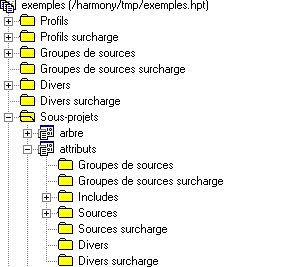

La surcharge des projets est utilisée lors de la verticalisation d'une application.
Généralités
Le développeur qui réalise la verticalisation dispose d'un projet, des sources de masques, de certains sources diva etc. Il peut donc utiliser les fonctionnalités de navigation fournies par Xwin.
Le développeur va rajouter ses propres sources dans le projet existant, rajouter ses propres sous-projets etc. La surcharge va lui permettre d'assurer la pérénnité de ses modifications. En effet, lorsqu'il recevra une nouvelle version du projet, cette dernière ne viendra pas écraser ses modifications.
Fichiers
A partir du moment ou un projet est surchargé, toutes les modifications apportées au projet sont faites dans d'autres fichiers. Ainsi, le remplacement des fichiers d'origine n'écrase pas ces modifications.
Le nom des fichiers de surcharge est déduit du nom d'origine en rajoutant la lettre U à la fin du nom.
Ainsi le projet exemples.dhpt a pour fichier de surcharge exemplesu.dhpt
et le sous-projet demozoom.dhps a pour fichier de surcharge demozoomu.dhps
Arbre
Lorsqu'un projet est surchargé, la plupart des dossiers sont doublés.
On appelera Dossiers de surcharge les nouveaux dossiers, et dossiers d'origine les anciens dossiers.
Xwin empêche toute modification dans les dossiers d'origine, toutes les modifications devant être faites dans les dossiers de surcharge.
Les sous-projets dans lesquels vous avez fait des modifications ont le fond de couleur verte.
Exemple de projet avec les dossiers de surcharge.
